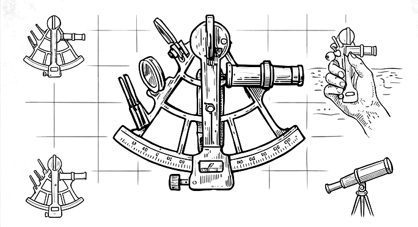

Driftwood is a trend-following signal system for region- and factor-tilted equity ETFs, run as two engines unified by asset location: a high-turnover Fast Book (the live track) for tax-advantaged accounts, and an offline-validated, tax-efficient Slow Book for taxable accounts. It flags and sizes trends — it does not place trades — and it reports the result, including the unflattering parts, honestly.
In the standard model of how a price moves — geometric Brownian motion — there are exactly two forces. One is drift: the deterministic, directional component, the expected return, the part that actually goes somewhere. The other is diffusion: undirected noise that averages to nothing. Every price path is a tug-of-war between them. Trend following is, almost literally, the attempt to detect and harvest the drift while refusing to be fooled by the diffusion — which is why the core signal of the strategy is simply measuring how large a fund's recent move is relative to the noise that could have produced it.
The image the name reaches for is the driftwood that washes up on the shores of Lake Michigan. Picture wood that the lake's relentless currents have tumbled and weathered until the soft, volatile material is worn away, leaving a denser, harder core. Whether or not that wood ever made a better fire, it is the right picture for what the mathematics does: by applying a volatility-normalized trend z-score across a universe of region- and factor-tilted equity ETFs, the strategy wears away the volatile sap of market noise and exposes the seasoned core of macro drift.
The metaphor extends to the posture. Driftwood does not swim; it is carried, shaped and moved by the prevailing current, going where the water is already going. Rather than predicting or fighting the tide, the strategy confirms direction with a channel breakout, sizes positions to a constant volatility budget, and acts only when the expected edge clears the transaction cost. It is patient and cumulative — the product of a long journey, weathered into shape over time — and it pays off only when a trend persists long enough to matter.
It is also a study in posture: mean reversion swims against the current, betting a move snaps back; Driftwood goes with it, betting the move persists. The name encodes the second thesis — own what the water is already carrying, and let the soft, volatile material wear away.
The strategy composes two complementary uses of the same trend signal — one decides which markets to own, the other decides how much to own — under strict risk limits, minimizing frictional drag.
Each month the system ranks the whole universe by volatility-normalized trend and holds the strongest half, long-only, inverse-volatility weighted (a quiet, steady drifter earns more notional than a wild one). Monthly rebalancing keeps turnover — and the cost it carries — low. This is the relative-strength engine: capital flows toward the regions and styles that are actually leading, and away from the laggards, regardless of which corner of the market that happens to be.
The headline book is long-only and always fully invested — no cash, no leverage. Rather than timing exposure in and out of cash, it keeps capital in the market and expresses its view through where that capital sits. On top of the momentum selection it applies a deliberate, forward-looking tilt: the risk-balanced weights are scaled toward the segments that look more attractive going forward — emerging markets, developed international, and value / smaller-cap — and away from the most richly-valued, heavily-owned corner (US mega-cap growth). The tilt redistributes a fully-invested book; it never parks the difference in cash. The discipline is that momentum still gates the names — a favored segment is only held while it is actually in the trending top half — so the tilt leans the portfolio toward cheaper, more diversified markets without abandoning the trend that the rest of the system is built to follow.
A core difficulty in systematic equity allocation is untangling overlapping risks: when an emerging- markets value fund rallies, is the market rewarding value or simply buying emerging markets? Driftwood addresses this by demeaning each fund's trend score within its group before ranking. Neutralize within region and the common "US" (or "EM") component drops out, so the book expresses which style is leading inside each region rather than merely that a region is leading; neutralize within factor and it isolates which region is leading for a given style. The portfolio then takes only the specific, measured exposure it intends to.
Risk control is embedded in the sizing, not bolted on. Rather than equal dollars, Driftwood allocates equal risk: position sizes are inversely proportional to recent volatility, so a wild, noisy ETF receives a smaller allocation and a steady, quiet drifter a larger one — the core philosophy of rewarding drift and penalizing diffusion, enforced mechanically. And a signal is acted on only when the expected edge clears the estimated cost of crossing the spread and paying fees. The strategy stays patient, refusing to trade unless the current is strong enough to justify the move.
Tested the honest way — walk-forward, net of cost, with parameters fit in-sample on the early history and reported out-of-sample on the held-out remainder, over — across — region/size/style ETFs — the strategy earns a return at least comparable to simply buying and holding the same universe (— a year versus —), while spreading its risk across far more of the world than a cap-weighted index does.
Risk is where the diversified, tilted construction earns its keep: a worst peak-to-trough of — against buy-and-hold's — — buy-and-hold's deepest loss ran about — the strategy's. On a risk-adjusted basis it beats the market: a higher Sharpe and Sortino than buying and holding. Out-of-sample Sharpe stayed positive (—) and degraded honestly from in-sample, and a synthetic control confirms the engine harvests trend, not noise.
Driftwood is an engineering synthesis of well-documented, peer-reviewed results, not a novel claim. The selection engine is cross-sectional momentum; the allocation is mean-variance diversification with a deliberate value/size/region tilt; the signal is volatility-normalized trend. The primary sources:
continuation coefficient that converts trend into expected edge is a
fitted-but-not-deeply-validated default; momentum is a public, partly-arbitraged anomaly; and the
equity windows are short relative to the claims. This is a signal system — it does not place trades —
and nothing here is investment advice. The figures are engineering validation, not expected returns.
Past performance does not predict future results.